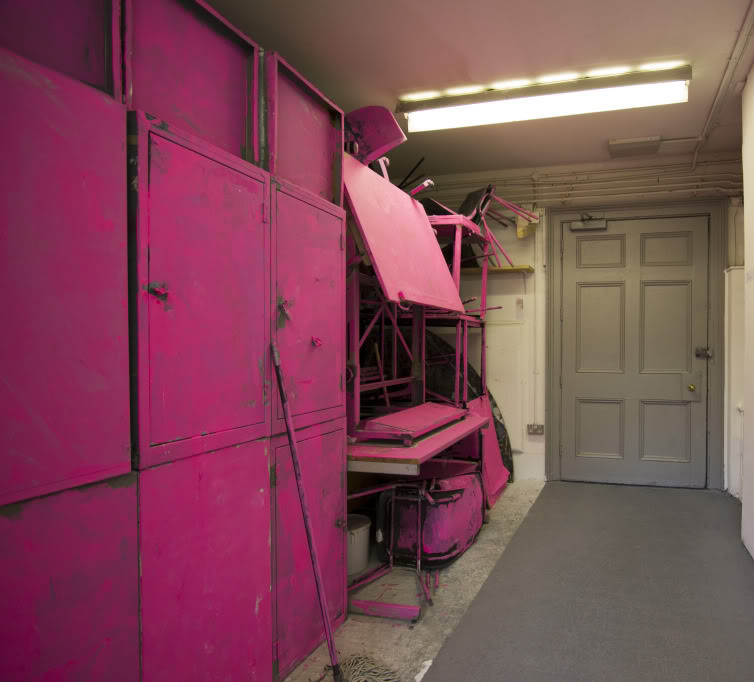
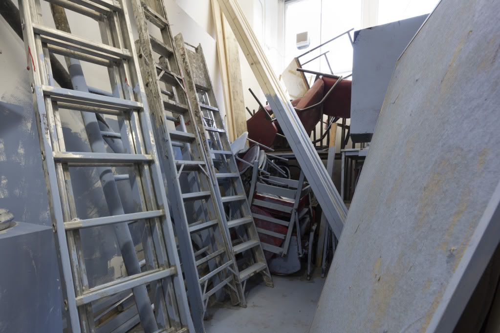

Look Upon My Works, Ye Mighty


A temporary store of studio furniture and lockers was painted as a single composition. When the furniture was later dispersed around the institution, fragments of colour carried traces of its former arrangement.